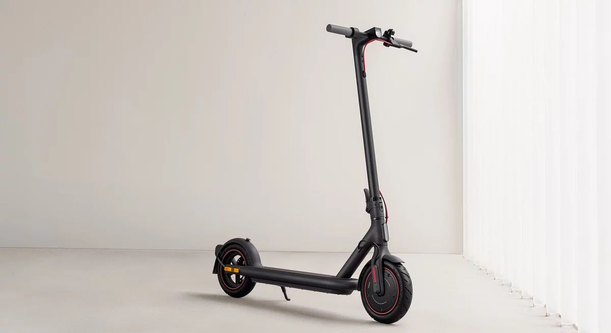
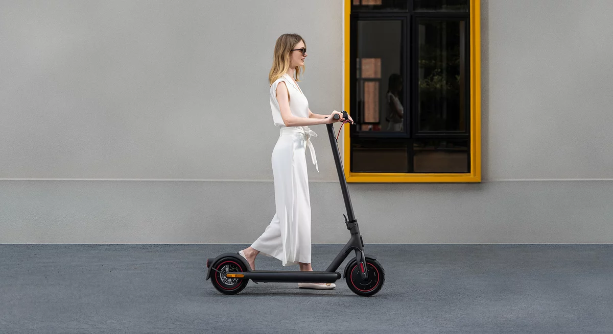
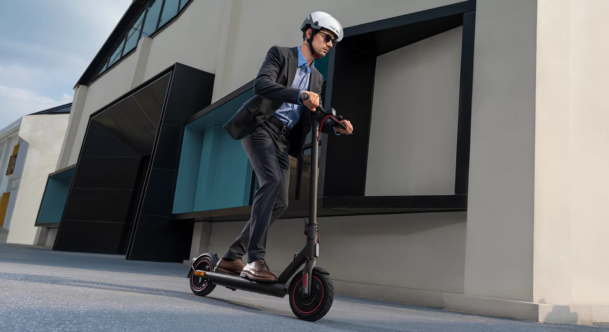
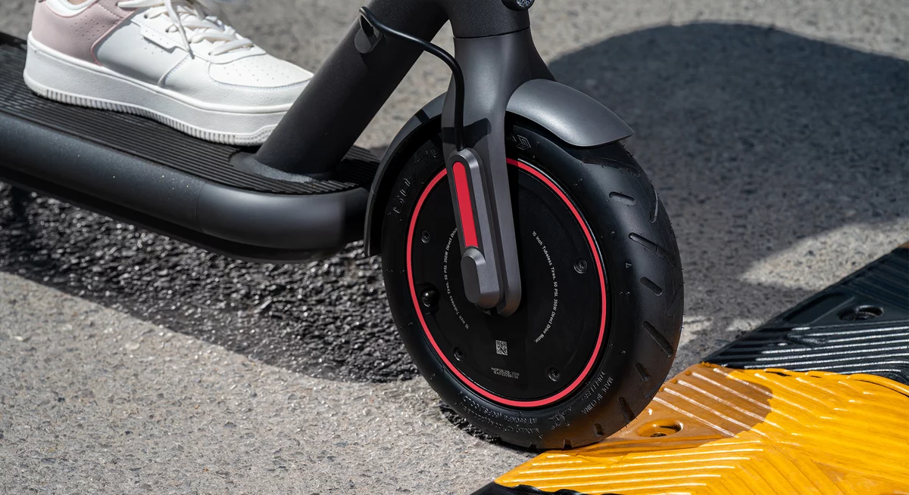
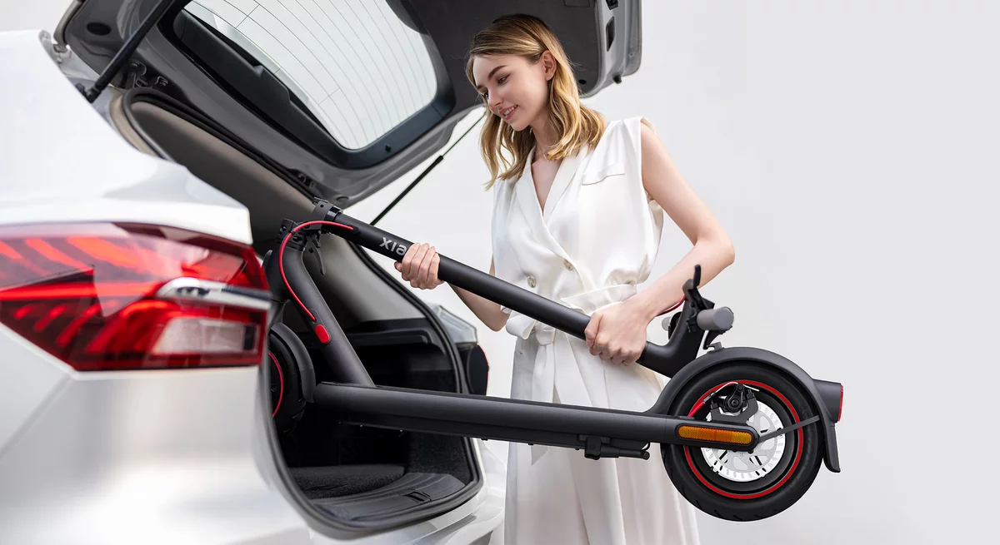

17 Novembre 2022
Xiaomi fait partie de ces constructeurs qui inondent le marché de nouveaux produits tout au long de l'année, mais le rendez-vous fixé avec la presse ce 21 juin était assez inédit puisqu'il s'agissait de la première conférence européenne organisée en France. La marque y a notamment dévoilé une nouvelle trottinette : l'Electric Scooter 4 Pro.
Xiaomi Electric Scooter 4 Pro : plus de puissance et d'endurance
Non contente de se positionner comme le nouveau modèle haut de gamme de la marque, la Electric Scooter 4 Pro revendique aussi le titre de « trottinette électrique la plus puissante créée par Xiaomi ». De quoi raccrocher les wagons face à certains autres constructeurs chinois qui ont débarqué en masse sur le marché français.
 Cette 4 Pro, de son petit nom, embarque un moteur dont la puissance maximale en crête pourrait atteindre 700 watts. La vitesse de pointe est inchangée (25 km/h), mais cette gestion électronique permettrait de face à la sollicitation importante de son utilisateur. En effet, selon Xiaomi, cela permettrait à ce modèle de ne pas (trop) s'essouffler sur des routes accusant un dénivelé positif de 20%… Nous ne manquerons pas de le vérifier lors des tests !
Outre cette puissance annoncée, le constructeur indique que la batterie de grande capacité (12 400 mAh - 446 Wh) offre à la 4 Pro une autonomie de 45 km, sans plus de précision. Comme toujours, le poids de l'utilisateur, sa manière de rouler, la météo et le relief des routes sont autant de facteurs qui impacteront l'endurance, mais sur le papier la promesse est belle.
Elle l'est d'ailleurs d'autant plus que la Electric Scooter 4 Pro conserve des dimensions plutôt compactes, même si elle grandit. Pour compenser notamment le fait qu'elle ne propose pas de guidon réglable en hauteur, elle est plus haute de 6 cm, son guidon plus large de 5,4 cm et son deck plus large de 1,9 cm par rapport aux autres modèles. Au total, la Pro 4 mesure 198 x 48,4 x 124 cm et sa conception en aluminium permet de contenir le poids à quelques 17,5 kg afin de la transporter sans trop souffrir en utilisation multimodale. Elle pourrait supporter des utilisateurs d'un poids maximal de 120 kg.
Xiaomi ne communique aucune information sur le temps de charge nécessaire pour refaire le plein. En revanche, bonne nouvelle, le connecteur de charge est situé sur le cadre, au dessus du deck. Non seulement il est plus accessible, mais il est en plus magnétique. Voilà qui va grandement faciliter la connexion.
Toujours pas de changement sur le design
Le design des trottinettes Xiaomi, depuis les tout premiers modèles, n'a guère évolué et certains pourront finir par s'en lasser. Cet « immobilisme » est assez regrettable quand certains constructeurs font des efforts pour améliorer la conception et répondre à des utilisations plus intenses et fréquentes, tandis que Xiaomi campe sur ses positions.
De fait, ne vous attendez pas à trouver des amortisseurs à l'avant ou à l'arrière, ni un nouveau phare en position basse pour améliorer la visibilité de la route, ni un frein à disque à l'avant pour équilibrer les freinages d'urgences.
Comme toujours, le moteur est intégré dans la roue avant et les deux pneus de 10 pouces (contre 8,5 pouces avant) profitent du label Xiaomi DuraGel, plus résistants aux crevaisons grâce à un gel qui peut obstruer jusqu'à une certaine taille de trou. De fait la 4 Pro migre vers des pneus tubeless décrit comme « self-sealing tire » par Xiaomi.
La photo ci-dessous donne l'impression que Xiaomi a agrandi la taille du disque à l'arrière. Cela serait une bonne chose, et nous attendons la réponse du constructeur pour le confirmer.
Prix et disponibilité
La Xiaomi Electric Scooter 4 Pro sera disponible à la rentrée à un prix public qui devrait se situer aux alentours des 799 €. Il s'agit là d'un tarif communiqué pour l'Europe, mais celui-ci devrait quelque peu varier en fonction des pays. Quoi qu'il en soit, en se positionnant à ce niveau de prix, le constructeur s'expose sur une gamme de produit où la concurrence est très rude, avec des modèles mieux équipés.
Nous la testerons rapidement pour voir ce qu'elle a de plus que les autres !
Par Cyprien
 Jean
Jean
10